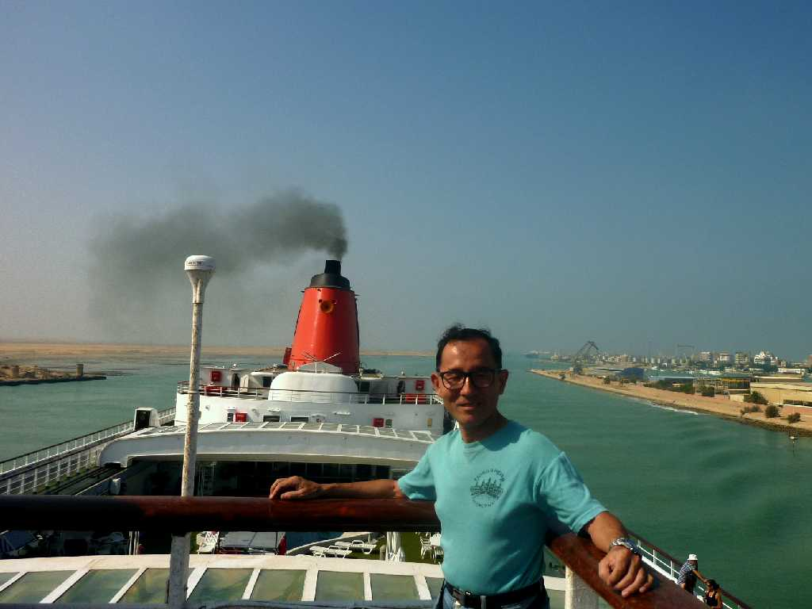
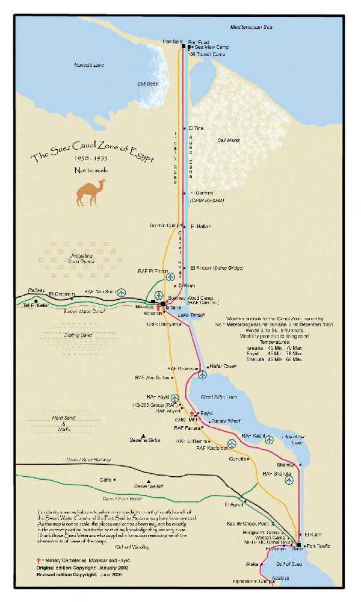
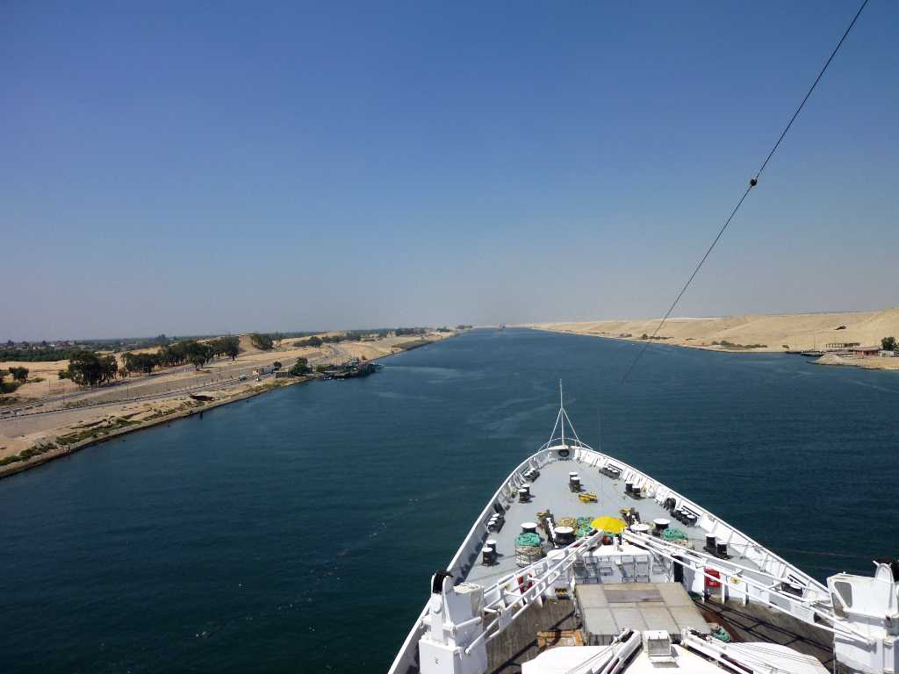
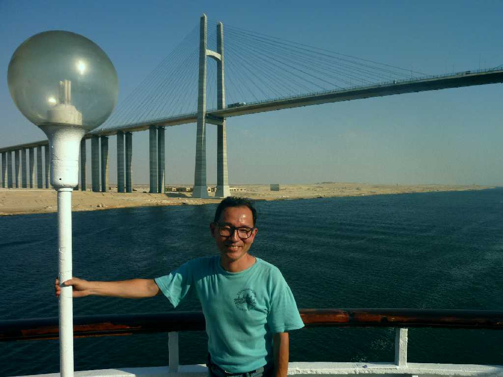
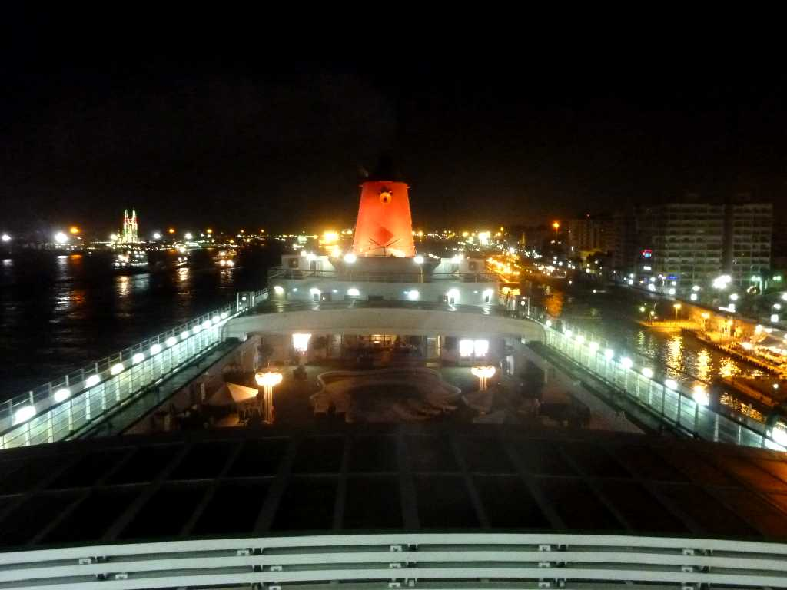

August 27 2010 8:48 Suez Canal
スエズ運河の紅海側の入口であるスエズ市付近

Suez Canal map
全長１９３ｋｍ最小幅２０５ｍ深さ２４ｍ世界最大の土木工事と言われるスエズ運河は１８６９年に完成しヨーロッパとアジアの航行が約一ヶ月短縮される 通行料はこの客船 SS Oceanic で約２,０００万円

August 27 2010 13:18 Suez Canal
運河のアフリカ大陸側西岸はナイル川の恵みを受け緑が豊かであるがシナイ半島側東岸は砂漠となっておりこの砂が運河に入り込むため２４ｍの深さを維持するのに膨大な浚渫費用がかかる

August 27 2010 16:03 Suez Canal Bridge
スエズ運河に架かる唯一の橋で日本の協力と６０％の支援により２００１年完成したので中央に日本とエジプトの国旗が掲げられているのが見える この運河を通る船の大きさの制限すなわちスエズマックスは高さ６８ｍ幅７７ｍ喫水２０ｍで海面と橋下の標高差７０ｍ等から決められている

August 27 2010 19:33 Port Side Suez Canal
１１時間かけてスエズ運河の地中海側の入口であるポートサイド港に到着 昔はナイルデルタの東端が紅海に流れ出ており紅海からナイル川を上り地中海に下る航路があったものと考えられている